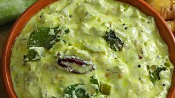

Hyderabadi Biryani
Ingredients:
- Snake gourd (potlakaya) - 1 medium (peeled and chopped)
- Tamarind - lemon-sized ball (soaked in water)
- Jaggery - 1 tablespoon (optional)
- Green chilies - 2 to 3 (slit lengthwise)
- Onion - 1 medium (sliced)
- Tomato - 1 large (chopped)
- Garlic cloves - 2 to 3 (crushed)
- Mustard seeds - 1/2 teaspoon
- Cumin seeds - 1/2 teaspoon
- Dried red chilies - 2
- Curry leaves - a few
- Turmeric powder - 1/2 teaspoon
- Red chili powder - 1 teaspoon
- Coriander powder - 1 teaspoon
- Fenugreek seeds - 1/4 teaspoon
- Oil - 2 tablespoons
- Salt - to taste
- Water - as required
 Recipe:
- Extract tamarind juice by soaking the tamarind in water and squeezing it well. Set aside.
- Heat oil in a pan or kadai. Add mustard seeds and let them splutter.
- Add cumin seeds, dried red chilies, fenugreek seeds, and curry leaves. Sauté until the spices release aroma.
- Add crushed garlic, slit green chilies, and sliced onions. Sauté until the onions turn translucent.
- Add chopped tomatoes and cook until they turn soft and mushy.
- Add turmeric powder, red chili powder, coriander powder, and salt. Mix well.
- Add chopped snake gourd pieces and sauté for a few minutes.
- Pour the tamarind juice into the pan. Add jaggery (if using) and mix well.
- Bring the mixture to a boil and then simmer for 10-15 minutes or until the snake gourd is cooked and the pulusu thickens.
- Adjust the consistency by adding more water if required.
- Once done, remove from heat and serve hot with steamed rice.
- Enjoy the tangy and flavorful Potlakaya Pulusu as a comforting meal!